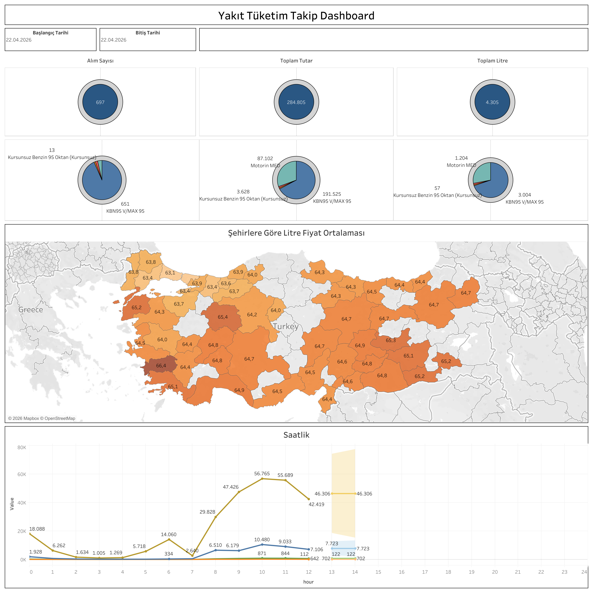

Canlı Rapora Erişin
Güncel yakıt tüketim verilerini Tableau üzerinde interaktif olarak görüntüleyin.
Dashboard Hakkında
Ne Gösterir?
Yakıt Tüketim Takip Dashboard, seçilen tarih aralığında gerçekleşen yakıt alımlarını alım sayısı, toplam tutar ve toplam litre bazında özetler. Yakıt tipi dağılımı ve şehirlere göre litre fiyat ortalaması harita üzerinde görselleştirilir.
- Özet KPI'lar: Alım Sayısı, Toplam Tutar (TL) ve Toplam Litre
- Yakıt Tipi Dağılımı: KBN95 V/MAX 95, Kursunsuz Benzin 95 Oktan, Motorin MED kategorileri ile pasta grafik
- Şehirlere Göre Litre Fiyat Ortalaması Haritası: Türkiye genelinde il bazlı ortalama litre fiyatları
- Saatlik Tüketim Grafiği: Gün içinde saat bazlı yakıt alım dağılımı
- Filtreler: Başlangıç tarihi ve bitiş tarihi
Dashboard Önizleme

Yakıt Tüketim Takip Dashboard — Tableau